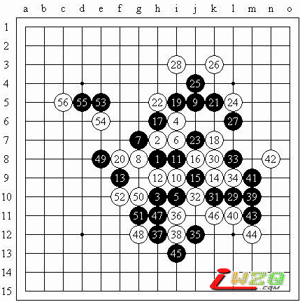

08-11-22应邀写一篇棋评~[瑞星]
#1 08-11-22应邀写一篇棋评~[瑞星] 作者：有志青年 发表时间：2008-11-24 12:15:35

P.S. j3那里有一手跳四，忘了什么时候走的了，大家注意一下。 这是昨天在QQGame上下的一盘棋。12不是第一次见，不过我手头没有什么现成的定式，以前尝试过13-g9/j9的变化，感觉黑棋还不错，或者说这个12本身就稍微弱一些，事实上最近听了一些课，瑞星局面的特征在于白棋优势在上黑棋优势在下，而这手12直接在中间做文章，也就是要尽快把局面定型，当然对于瑞星这样对攻比较激烈的形势来说如此迅速地定型基本上就会有一定的缺点——比如让黑棋占到了外势。然而在实战中，这样的策略很可能起到意想不到的效果。 实战的13也是第一次走，主要是想让白棋跟过来防，这样黑棋的选择就很多了（主要是先在右边处理并争先），不料实战的白棋直接选择了激烈的进攻，18手之后的局面分析很重要，如果因为注意到黑白双方都有很强的攻势而自乱阵脚就麻烦了，其实静下心来想想就知道，黑棋可能用于进攻的所有活二都不能用于进攻，否则白棋反击形成若干步的VCF，再加上反击的那个子力，黑棋就难下了，明白这一点之后就可以利用先手回防，逐步消减白棋的优势；同时由于这样的迂回主要是围绕白棋的中心优势进行的，因此还能顺便把外势给占了，实战也正是如此。 第一个问题是利用上面还是下面的子力进行过渡呢？事实上这并不难回答：实战的19是唯一一个不产生反击的进攻了。此时21是冷静而关键的一手！横向活三沟通了21和25的斜线力量，同时22之后眠三可能形成的反四让白棋无法顺利地走出完整的进攻形状，从实战的进程来看，29后黑棋已经完全占据主动，不过白棋走得也很顽强。35是否有些着急？39后我一度认为黑必胜了，可惜42的防点是计算中的盲点，幸好主动权仍然把握在黑棋手中。但由于在右侧的进攻消耗了很多子力，因此左边的进攻又显得很麻烦，子力联系不够的情况下黑棋很难成杀了。于是在56之后，我幸运地超时了……#2 Re:08-11-22应邀写一篇棋评~[瑞星] 作者：nara 发表时间：2008-11-24 19:38:26
P.S. j3那里有一手跳四，忘了什么时候走的了，大家注意一下。
这盘棋我看了，在QQ3手1，屏蔽（黑）vs深蓝妖瞳（白），j3这手冲四是29手走的。其实31手就杀了（如图）（估计时间短，没有算的很细致）。不过屏蔽老师的棋评很精彩.希望老师以后多写的点棋评.
=======上图对应的爱五子棋谱代码如下，以便你拆解：========
h8h9h6i10i6i9g9g8j11i7i8h7f7k7j7j8h10k9i11f8k11h11j9l11j12k13l10i13j13j10g6
======================================================
#3 Re:08-11-22应邀写一篇棋评~[瑞星] 作者：深蓝妖瞳 发表时间：2008-12-18 21:37:49
谢谢屏蔽兄的棋评。辛苦了